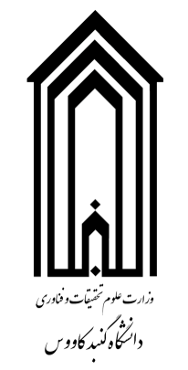
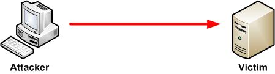
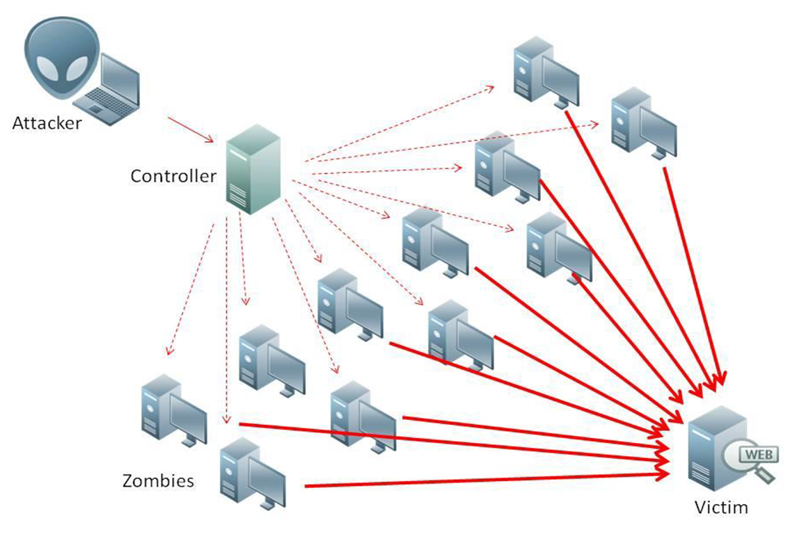
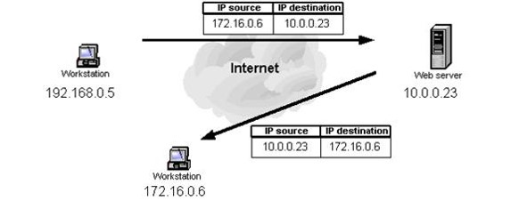
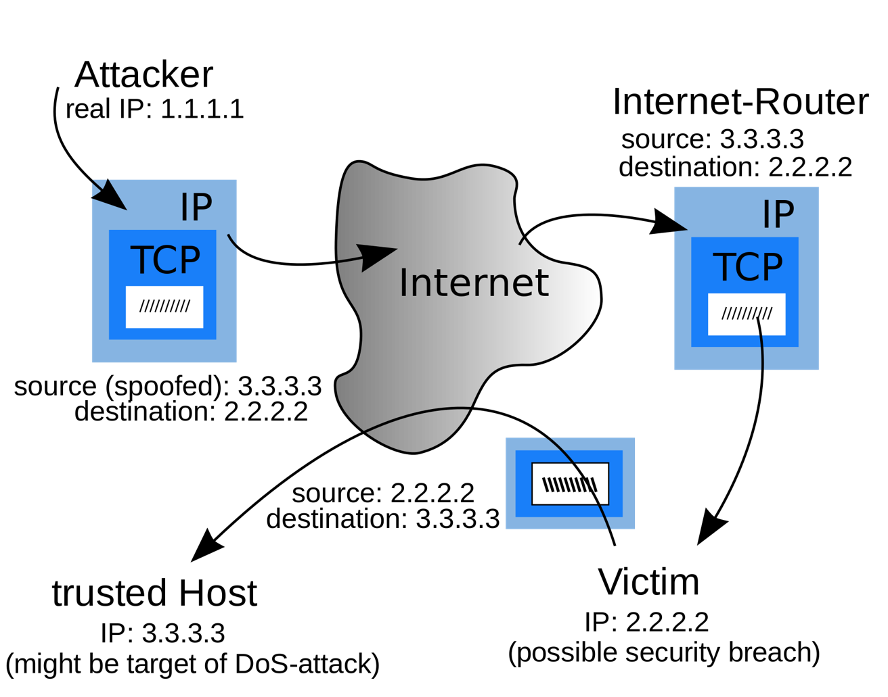
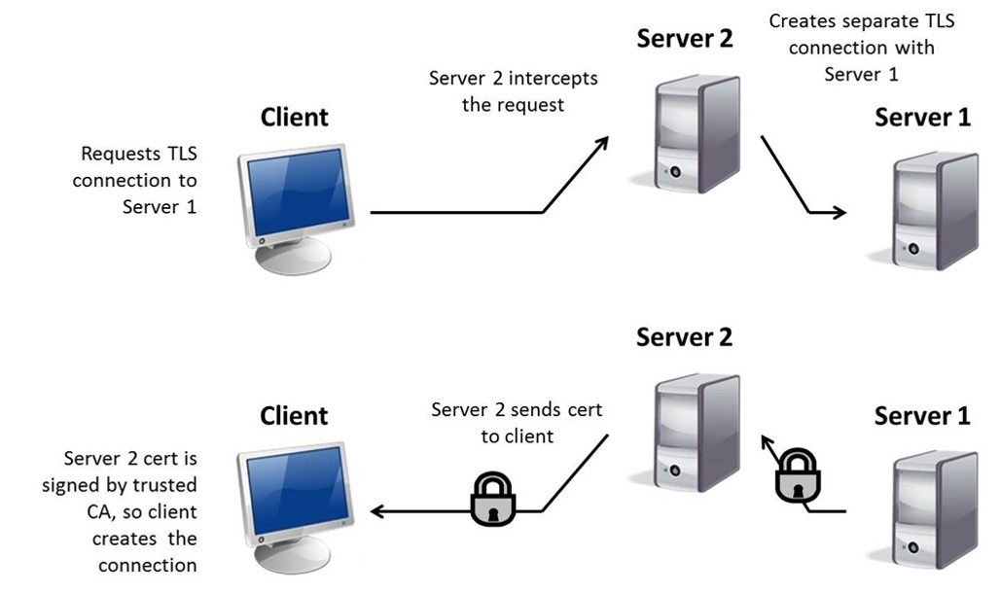
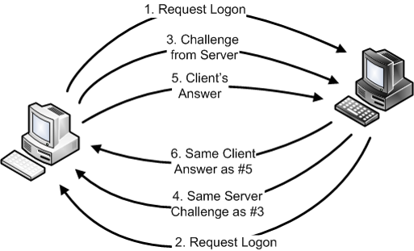
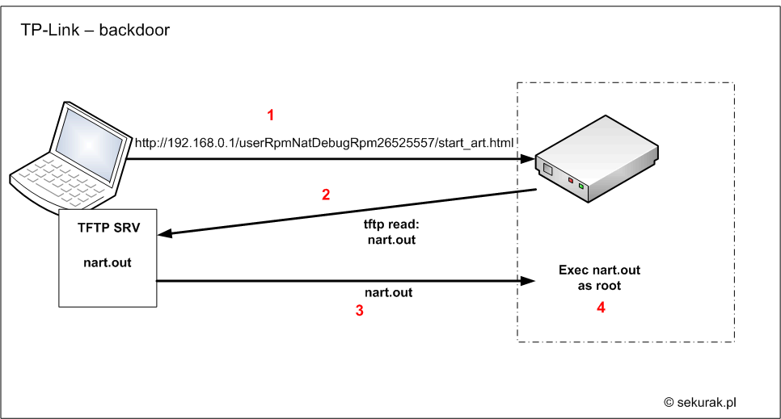

Your browser doesn't support the features required by impress.js, so you are presented with a simplified
version of this presentation.
For the best experience please use the latest Chrome, Safari or Firefox browser.

عنوان ارائه:
انواع حملات اینترنتی و راه های مقابله با آن
استاد: سعید کهساری
تهیه ارائه: امین مستانی یزد
درس کارگاه رایانه
7 خرداد 1396
فهرست:
- تعاریف
- بررسی مشکل
- انواع حملات
-
- DDoS
- Spoofing
- MITM
- Brute Force
- Back Door
- سرویس های ویندوز
تعریف اتک:
عملی که باعث ایجاد وقفه در سرویس دهی یک سیستم می شود.
این ضعف ها در یک سیستم که اجازه بروز همچین مشکلاتی را می دهد بخاطر اشتباه نرم افزاری است.
این اشتباه های نرم افزاری به هکر/اتکر اجازه دسترسی به سیستم یا شبکه را می دهد.
* Vulnerability
* Exploit
* Zero day
* Privilege escalation
چجوری مشکل بوجود میاد ؟
- وجود ضعف در سیستم ها
- سو استفاده افراد برای مقاصد مالی و کسب شهرت
- بروز رسانی دیر هنگام سرویسهای معیوب
پر استفاده ترین حملات :
- Spoofing (جعل هویت)
- Back Door (در پشتی)
- Man in the Middle (مرد میانی)
- Brute Force (?)
- DoS & DDoS (?)
حملات از نوع (DDoS (Distributed Denial of
Service
- ايجاد ترافيک کاذب در شبکه
- اختلال در ارتباط بين دو ماشين
- ممانعت کاربران مجاز به منظور دستيابی به يک سرويس
هدف از حملات DoS، ايجاد اختلال در منابع و يا سرويس هائی است که کاربران قصد دستيابی و
استفاده از آنان را دارند (از کار انداختن سرويس ها)


انواع حملات DDoS
- Smurf/Smurfing
- Fragle
- Ping of death
- SYN Flood (ارتباطات نيمه فعال)
- Land (Same source & destination ip)
- Bonk (Kind of dns attack)
- Zombies
در مورد حمله از نوع DDoS سوالی دارید ؟
حملات از نوع Spoofing
به معنای ساخت IP Packet بدست هر کسی جز آدرس های اصلی مبداء (IP Source Addresses)
است. این روش با دلایل روشنی مورد استفاده قرار میگیرد.

ترکیبی از DDoS و IP Spoofing

حملات از نوع Man In the Middle
MITM، یک حمله استراق سمع فعال است که بوسیله برقراری ارتباط با ماشین قربانی و باز پخش پیغامها بین آنها کار
میکند. در اینگونه موارد، یک قربانی بر این باور است که با قربانی دیگر به طور مستقیم ارتباط برقرار کرده است
در حالی که در حقیقت ارتباط از طریق میزبانی که این حمله را انجام میدهد در جریان است. نتیجه نهایی این است که
میزبان حمله کننده نه تنها میتواند اطلاعات حساس را رهگیری کند، بلکه می تواند برای بدست آوردن کنترل بیشتر
سیستم قربانیها، یک جریان داده را تزریق و دستکاری نماید.

روش جلوگیری از اتک Man in the Middle
؟
بیشتر راههای کارآمد برای مقابله با این حملات در سمت سرور یا روتر قرار دارد.
کاربر تقریبا کنترل اساسی روی تعامل ندارد، اما میتواند از یک رمزگذاری قدرتمند برای ارتباط با سرور استفاده
کند. اما یک راه دیگر برای مقابله با این حملات، این است که هیچ گاه به WiFi عمومی مستقیم متصل نشوید.
حملات از نوع Brute Force
در این روش هکر با استفاده از نرمافزارهای مخصوص و روشهای خاص سعی میکند تمام عبارتهای ممکن را بررسی کند
تا بتواند نام کاربری و رمز عبور را به دست آورد.

روشهای عمومی بروتفورس
- امتحان کردن دستی رمز عبور
- روش Dictionary
- Mask Attack
- Combination
- Hybryd
روش های مقابله با حملات Brute Force
- استفاده از کد Captcha در کنار فرم ورود
- انتخاب نام کاربری مناسب
- انتخاب رمز عبور مناسب و تغییر مداوم آن
حملات از نوع Back Door
برنامه ای است که امکان دستيابی به يک سيستم را بدون بررسی و کنترل امنيتی، فراهم می نمايد.
برنامه نويسان معمولا چنين پتانسيل هائی را در برنامه ها پيش بينی تا امکان اشکال زدائی و ويرايش کدهای نوشته
شده در زمان تست بکارگيری نرم افزار، فراهم گردد. با توجه به اين که تعداد زيادی از امکانات فوق، مستند نمی
گردند، پس از اتمام مرحله تست به همان وضعيت باقی مانده و تهديدات امنيتی متعددی را به دنبال خواهند داشت.

انواع حملات اینترنتی و راه های مقابله با آن
آیا سوالی دارید ؟
تدوین و پیاده سازی سیاست امنیتی :
- بررسی نقش هر سرويس دهنده به همراه پيکربندی انجام شده در جهت انجام وظايف مربوطه در شبکه
- انطباق سرويس ها، پروتکل ها و برنامه های نصب شده با خواسته های يک کاربر
- بررسی تغييرات لازم در خصوص هر يک از سرويس دهندگان فعلی (افزودن و يا حذف سرويس ها و پروتکل های غيرضروری،
تنظيم دقيق امنيتی سرويس ها و پروتکل های فعال)
برخی از سرویس های
پیش فعال در سیستم عامل ویندوز
- IIS (Internet Information Services)
- NTP (Network Time Protocol)
- RDC (Remote Desktop Connection)
- DNS (Domain Name System)
- And etc …
مهم ترین وظیفه مسئول امنیتی غیر فعال کردن سرویس های بدون استفاده می باشد.
سرويس های حياتی و
موردنياز
هر سيستم عامل به منظور ارائه خدمات و انجام عمليات مربوطه، نيازمند استفاده از سرويس های متفاوتی است. در حالت
ايده آل، عمليات نصب و پيکربندی يک سرويس دهنده می بايست صرفا شامل سرويس ها و پروتکل های ضروری و مورد نياز به
منظور انجام وظايف هر سرويس دهنده باشد. معمولا توليد کنندگان سيستم های عامل در مستندات مربوطه به اين سرويس ها
اشاره می نمايند.
مزايای غيرفعال
نمودن پروتکل ها و سرويس های غيرضروری
مهاجمان همواره قربانيان خود را از بين سرويس دهندگانی که به درستی پيکربندی نشده اند، انتخاب می نمايند.
مهاجمان می توانند با استفاده از آنان، آسيب های جدی را متوجه شبکه نمايند. تهديد فوق می تواند از درون شبکه و
يا خارج از شبکه متوجه يک شبکه کامپيوتری گردد.